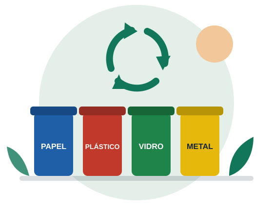
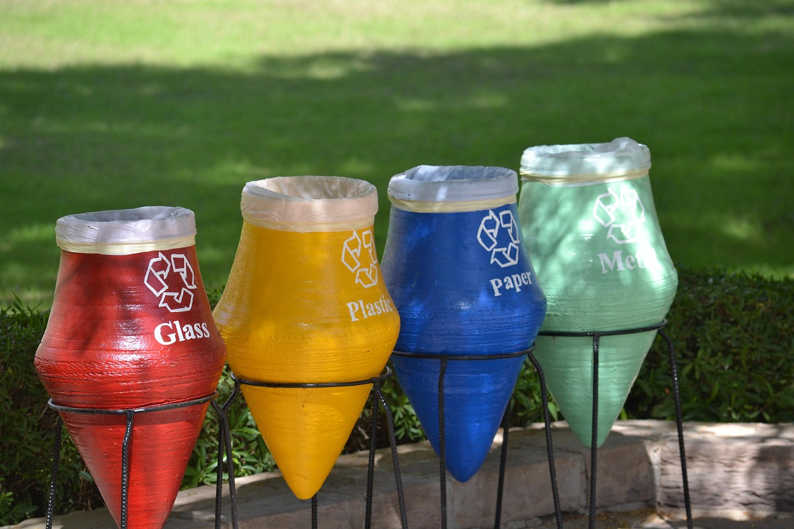
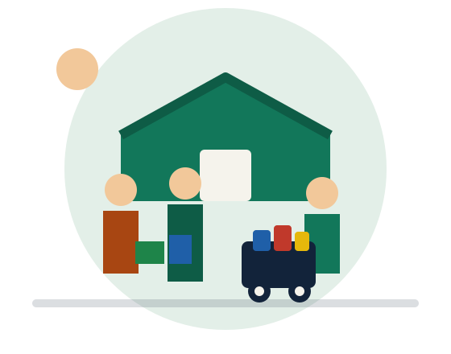
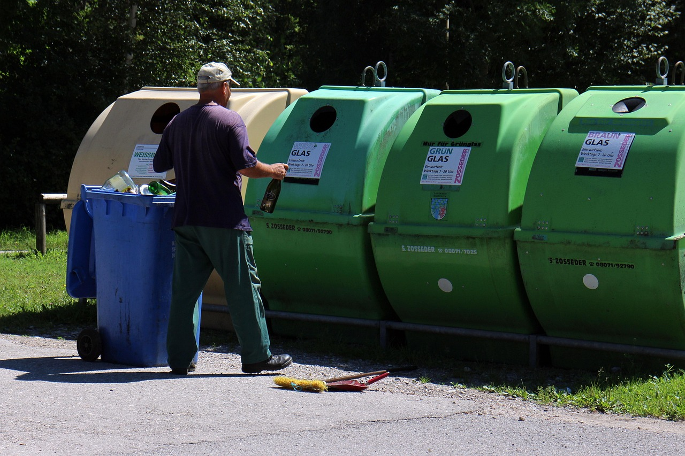
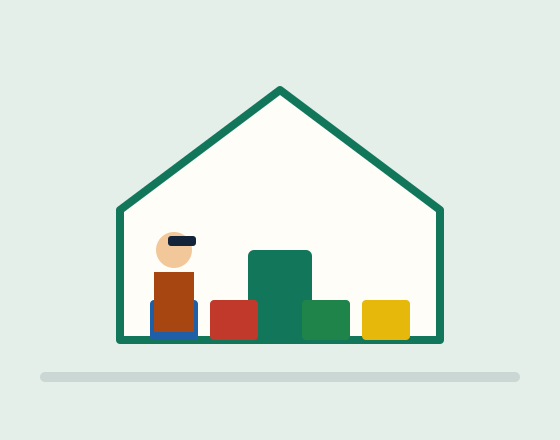
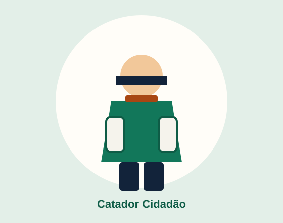
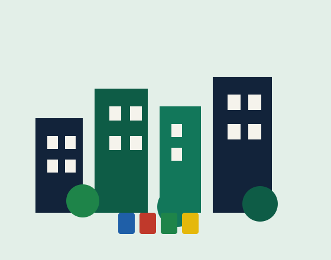
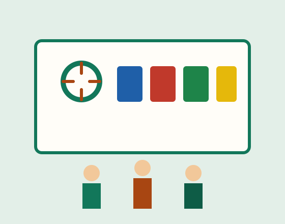
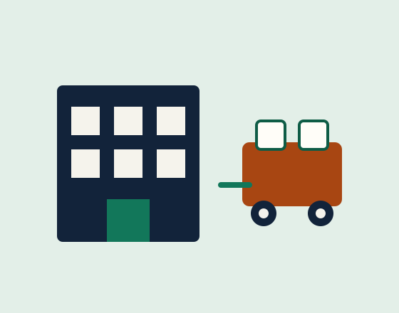

ODS 11 · ODS 12 · Economia solidária
Galeria da coleta que inclui
Fotos e ilustrações do caminho do reciclável: da casa à cooperativa, do Ponto Verde à oficina na escola.

Momentos do EcoConecta
Use os filtros para explorar por tema. Cada imagem abre em ampliação (teclado: Enter no link da figura; feche com o link Fechar). As cenas e legendas são fictícias, criadas para fins acadêmicos.

Ampliar: lixeiras da coleta seletiva
Ampliar: cooperativa de catadores
Ampliar: Ponto Verde no Bairro
Ampliar: separação em casa
Ampliar: Catador Cidadão Ampliar: mutirão de limpeza
Ampliar: mutirão de limpeza

Ampliar: cidade e sustentabilidade
Ampliar: oficina de reciclagem
Ampliar: empresa parceiraImagens e legendas fictícias, criadas para fins acadêmicos.
Coleta seletiva separa papel, plástico, vidro e metal antes da cooperativa.
Na cooperativa, o material separado vira renda digna.
Ponto Verde no Bairro recebe recicláveis de moradores e comércios.
Recicla na Escola ensina consumo consciente a crianças e jovens.
Em casa, limpe e seque o material antes de levar ao Ponto Verde.
Catador Cidadão apoia capacitação e equipamentos de proteção.
Cidades mais limpas dependem de coleta seletiva e de quem faz a triagem.
Oficinas mostram na prática o destino de cada tipo de material.
Empresas parceiras doam equipamentos e reforçam os Pontos Verdes.
Vídeos sobre o tema
Três vídeos do YouTube sobre coleta seletiva, cooperativas de catadores e educação nas escolas. Nenhum começa sozinho. Abaixo de cada um há um resumo e o link para abrir no YouTube, se o player não carregar aqui.
Quer aparecer nesta história?
Seja voluntário, peça uma oficina para sua escola ou apoie uma cooperativa. Juntos já destinamos 48 t de recicláveis por mês — dados fictícios, criados para fins acadêmicos.
Entrar em contato